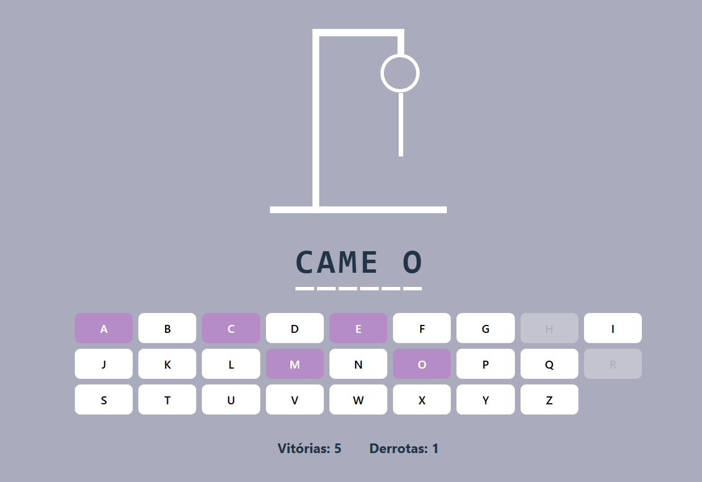
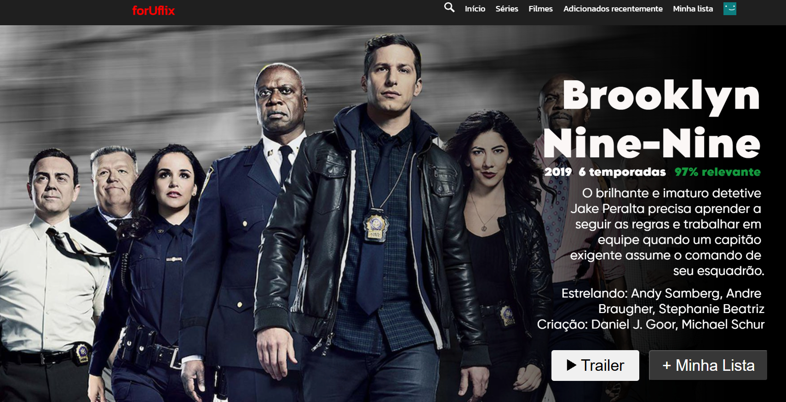

Jogo da Forca
Jogo da forca onde o jogador tenta adivinhar o nome de um animal sorteado de uma lista, antes que o desenho da forca seja completado.
Site ForUFlix
Este foi um site desenvolvido em um workshop de HTML e CSS, onde exploramos conceitos de marcação, estilização e organização de conteúdo. Adicionamos trailers dos projetos e implementamos um sistema de avaliação ao final para interação dos visitantes.
Smart Dispenser
Dispenser automático para idosos que organiza e libera medicamentos nos horários certos, com alertas sonoros e visuais para evitar esquecimentos e garantir o uso correto das doses.